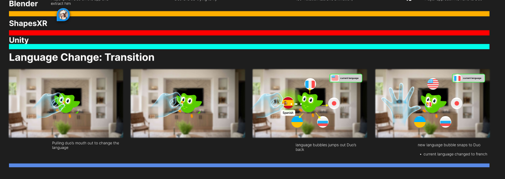
We made visuals of how hand interactions would work in Figma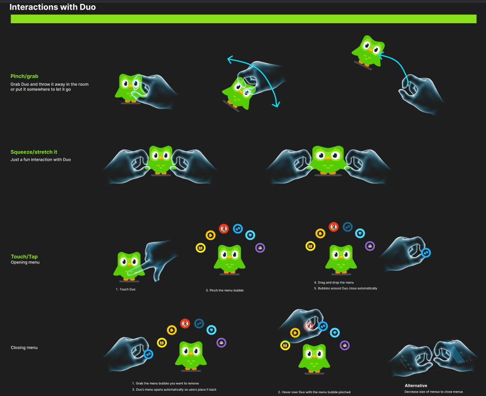
We would create storyboards to make sure the Golden path is established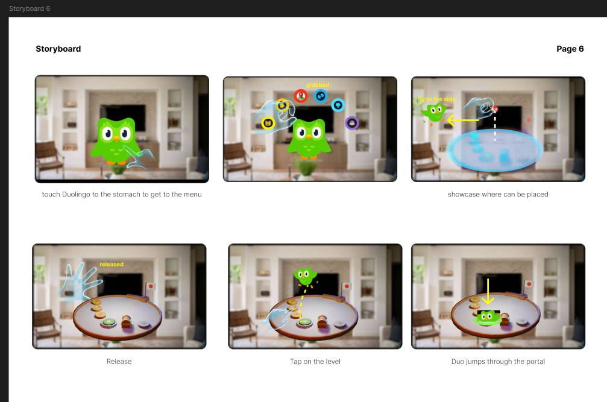
We also did our research and all signed up to Duolingo to make sure we understand what works in 2D and what can be translated into 3D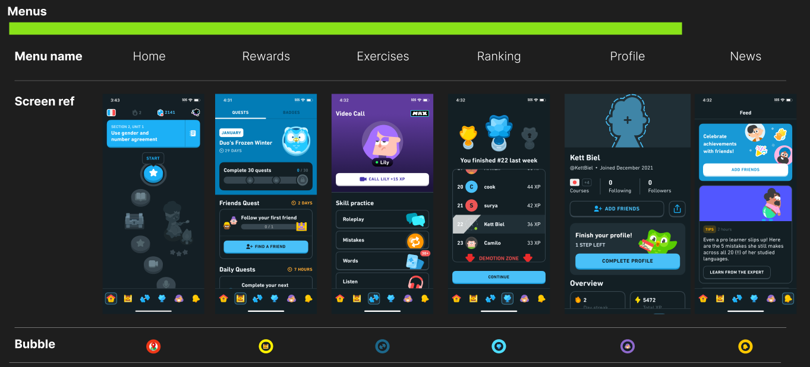
First I worked on hand recognition. When I put my hand out and have one finger pointing out, Duo would fly towards my finger and stay on my finger. Then using my hand to do a swipe action as if I'm petting, Duo would play an animation. Sticking out other fingers, Duo would not stay on my finger anymore. One challenge was making sure the Owl goes towards and stops at my finger. I did this by checking when Duo has reached my hand, once it reaches my hand, if I am still pointing with one finger, Duo will be childed to the finger until that's not the case. Since there were different hand poses going, I first tried to make sure the swiping was working. I did this by checking if Duo's poses would change everytime I swipe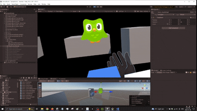
Next is the hand pose. I need to make sure Duo can fly towards my finger NO MATTER which hand I am using.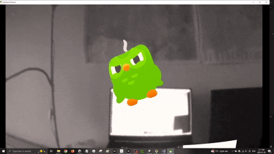
Finally, I combine the petting and Duo flying towards my finger together! This time with the final Duo animation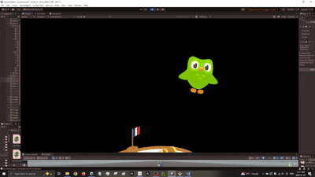
Next task was to create a journey table. In Duolingo, you can scroll up and down the journey to see which lesson you are on. Since we are creating an XR app, we need to convert this 2D journey into a 3D version. We thought of a rotating journey table. The table required scaling discs and the user turning the table. First was figuring out how to scale the discs. Here was an early attempt with just up down arrows and a gameobject. When the object was close to the edge, it scales down. If the object was further away from the edge, it scales up.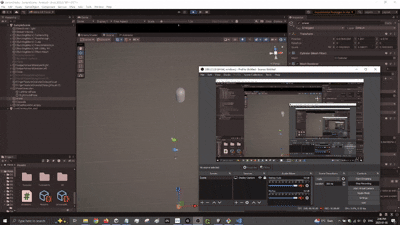
Now that using a dummy object worked. It was time to test it on the real model. As you can see, the models scales up and down depending if it's closer to the middle or the edge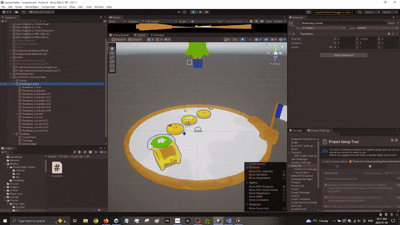
With the scaling object issue resolved. It is time for a way for the user to scale them up...since there are no up down arrows in a headset. First we tried to see if having the user rotate the object by pinching the edge of the journey table would feel natural.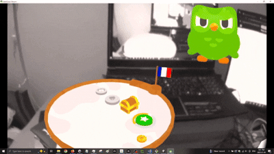
Pinching the edge of the table did not feel natural. We decided to use the flag handle to rotate. I did this by treating the journey table like opening and closing a door. Where there is a "hinge" and the handle is like the doorknob. This felt way more natural. Additionally, instead of up down, the rotation is controlling when the objects on the table is moving, since the objects moving is isolated from other scripts, the scaling up and down logic wasn't affected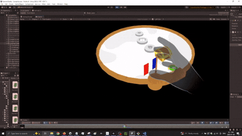
The journey table was working but the scale or position of the table may not be where the user wants. We needed a way for the user to move or scale the table. We tried to think of a way and decided to use a common VR practice which was adding a bar with visual color change feedback when the user has touched the bar. This was a good affordance for the user to understand how to move and scale the table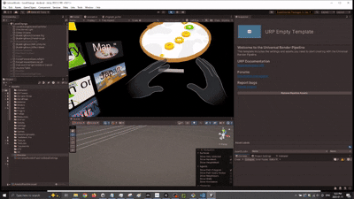
Next was the Language Transition. We wanted a fun and interactive way for users to pick there langauge. What better way then to pick a language then for the user to grab the beak and have it tap on a language. When a language is tapped, a border would appear to signify the user has interacted with it. Once the user decides on a language, the user can let go of the beak while hovering on the language. The beak will SNAP back to Duo. This snapping was a feature in meta hand tracking which we utilized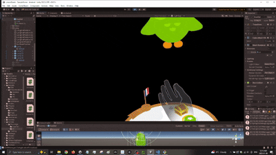
There was also level transition which we continued utilizing the snapping affect. We can grab a level and snap it on to the journey table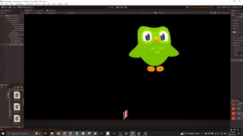
We were announced as the winner for Best Mobile app to XR app and Best use of Shapes XR.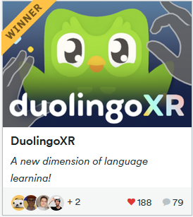
Best use of ShapesXR winner annoucment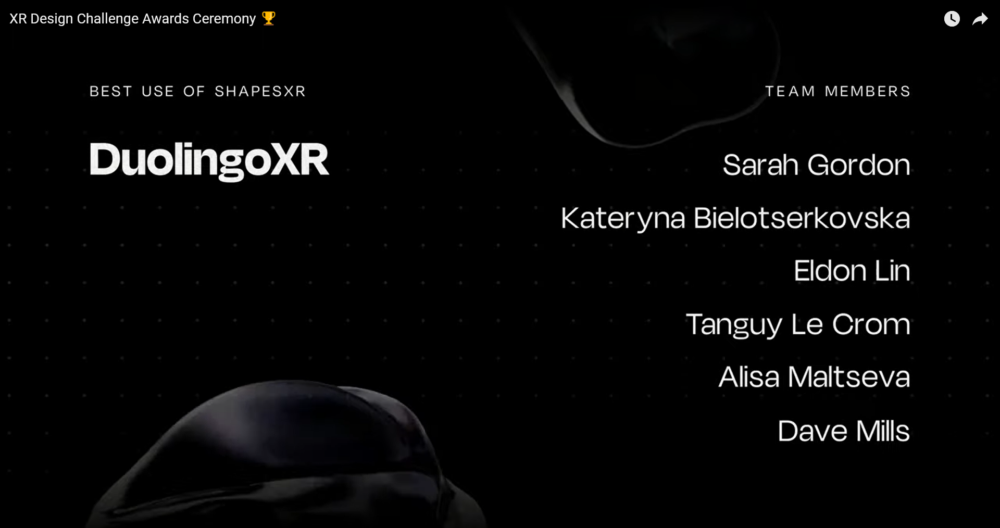
Best Mobile App to XR App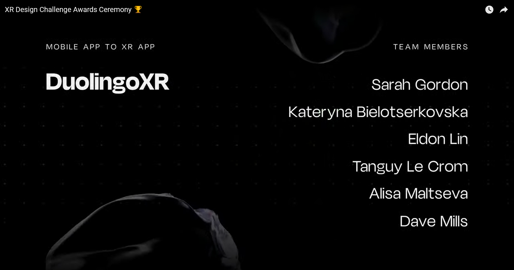
We even got a shout out from ShapesXR on LinkedIn!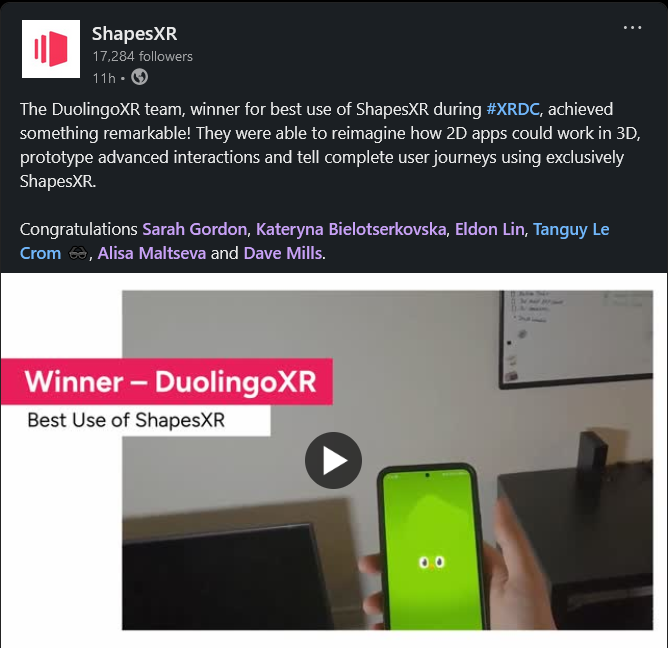
Not only that, but NathieVR even posted it on his Youtube channel here was the person to introduce us at AWE!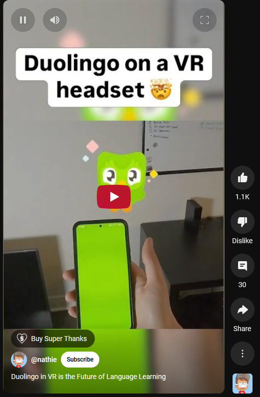